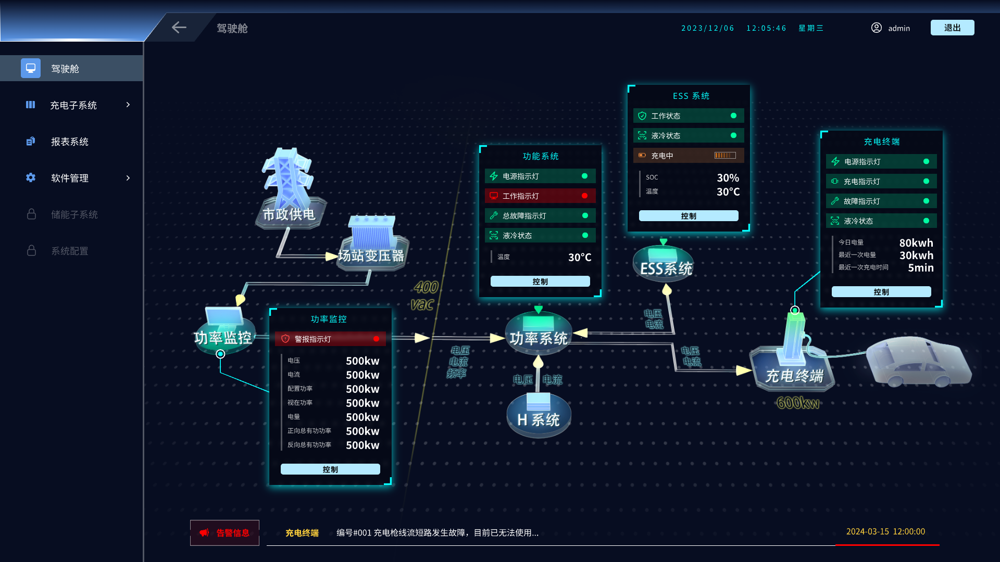
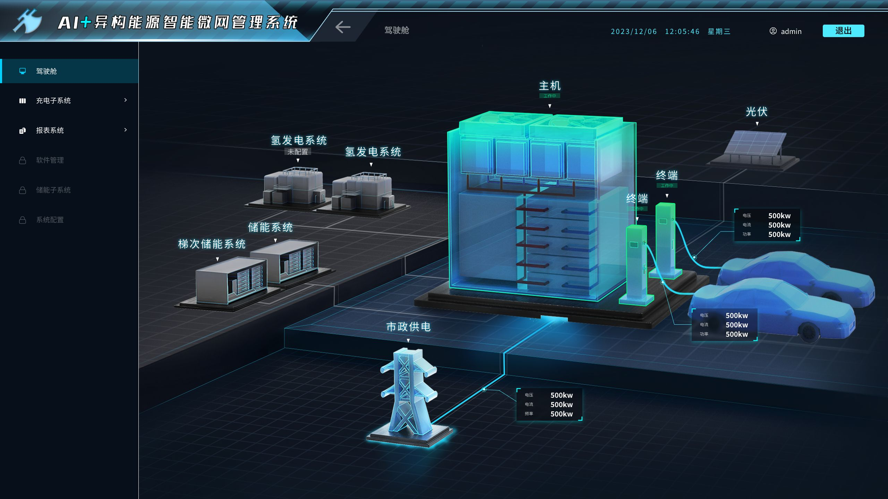
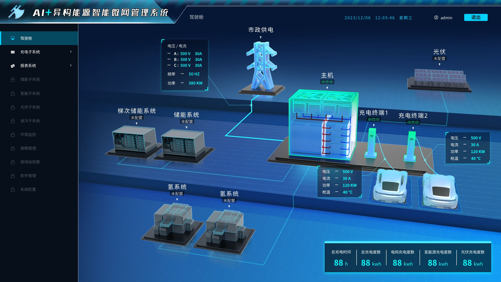
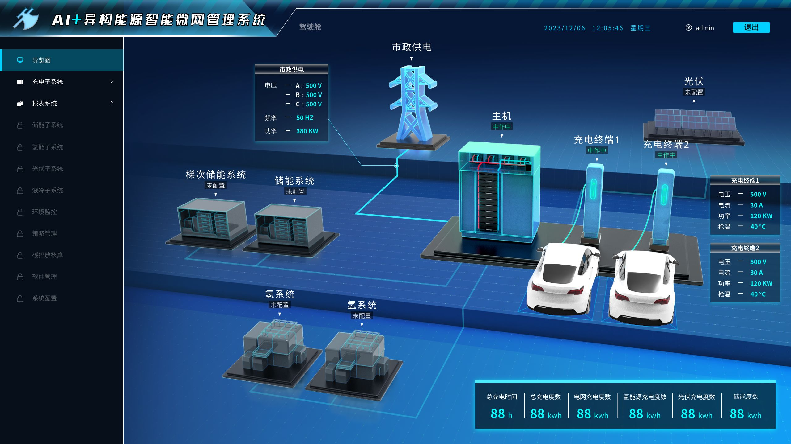
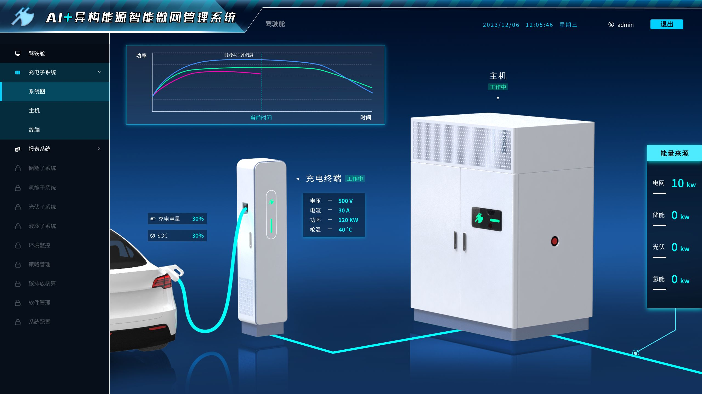
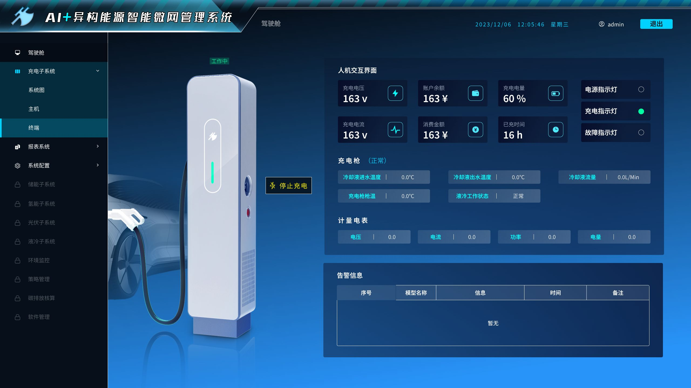
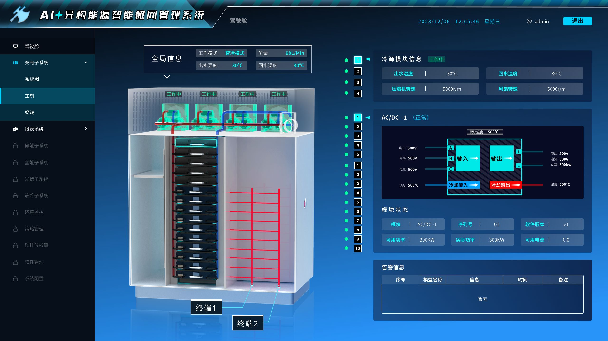
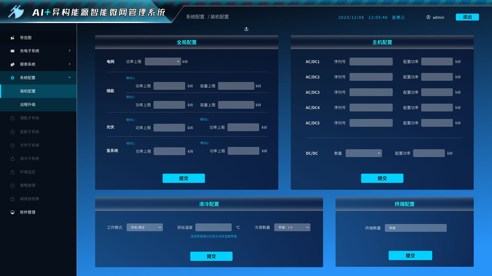

定义“AI+新能源”的
科幻工业风视觉语言
为减少工业重度监控环境下的视觉疲劳并高效突出关键数据，界面采用了严苛的深色基调，辅以强对比的能量色作为逻辑载体。
质感与组件技术架构
面板大范围采用毛玻璃效果（Glassmorphism）承载高密度数据卡片，降低实景3D背景对文字识别的干扰。同时，结合微细霓虹光带（Neon Stroke）勾勒核心设备轮廓，在虚拟孿生空间中建立明确的物理边界边界感。
3D调度大屏版本迭代历程
该大屏前后经历4个版本的构思迭代，从初步概念到最终落地，不断优化视觉效果与交互体验。



中央数字孪生 3D 调度大屏
基于场站实际布局图纸，构建了包含光伏车棚、储能集装箱、市电供电大装置及配电主机的低多边形（Low-Poly）工业模型体系。采用俯视 45 度黄金视角，确保复杂园区内的设备空间分布一目了然。

能量流线粒子动效
在光伏阵列 → 储能系统 → 超充桩之间设计了定向流动的粒子光带。蓝色代表充电/输入，橙色代表放电/负荷需求，直观映射实时能量拓扑。
设备运行状态呼吸灯效
空闲设备处于低亮度的微弱旋转静息态；运行状态中的设备整体高亮，并带有呼吸态霓虹描边；故障设备则以高频闪烁红框强行拉取注意。
清晰的界面三栏式布局
左侧：全局调度、AI策略、KPI指标；中央：孪生3D主监控区；右侧与下方：高聚合设备实时功率曲线与基础运行底座数据。
高精细度核心设备组件拆解
充电终端与充电枪细节监控
针对超充桩线缆接口、枪头连接状态及枪温变化进行适度视觉刻画，在兼顾 Web 端运行性能的同时，确保关键细节真实可信。
■ 实时波形映射： 充电终端的电压/电流曲线完美遵循真实电力物理特性变化。
■ HMI 镜像控制： 04 界面完整还原了充电桩侧人机交互界面的遥信与遥测核心参数指标。

充电终端关联图
人机交互界面详情
主机冷源模块与 AC/DC 内部透视
为了在系统异常时供工程师极速排查故障，设计引入了结构“微透视”概念。对储能/超充主机的散热百叶窗内部、AC/DC 变流模块拓扑以及冷源液冷回水管路进行了精细化渲染。
- 红蓝动态双色管路精确映射出水与回水温差变化
- 模块状态列表化（1~10号模块），支持单体设备解耦监控
- 通过高亮网格框定具体内部元器件，防止大屏视差误判
强逻辑、高密度的系统配置面板
此界面是产品底层逻辑与高维表单设计的集中体现。支持对电网功率上限、储能/光伏/氢系统各分型模块的功率与容量上限进行高频深度下发控制。

系统配置界面设计难题复盘与深度方案沉淀
无真实数据时，如何确保界面“可信”与尊严感？
拒绝填充无逻辑的随机数。全面采用符合电力行业逻辑的示意性演化数据（例如：光伏发电功率曲线严格遵循太阳高度角的正弦规律波动、储能 SOC 严格按充放电互斥吞吐逻辑演变），以此跑通界面演示的可信度链条。
静态载体如何完美自洽“动态交互演示”？
针对核心关键物理交互节点，制作高聚合、轻量的 5秒微动效（GIF）短视频预演，内嵌于线上作品集进行自循环播放，大幅弥补传统的 PDF 或静态長图在汇报时缺乏动态感知度的缺陷。
3D 渲染成本高昂、修改周期漫长怎么办？
主导推行了分层渲染与资产解耦策略——远景、背景建筑物及辅助电网路段采用轻量低多边形低模（Low-Poly），核心调度设备（超充桩、核心变流机柜）则采用高模精度渲染。在死锁视觉焦点的同时，缩短 70% 的迭代渲染周期。